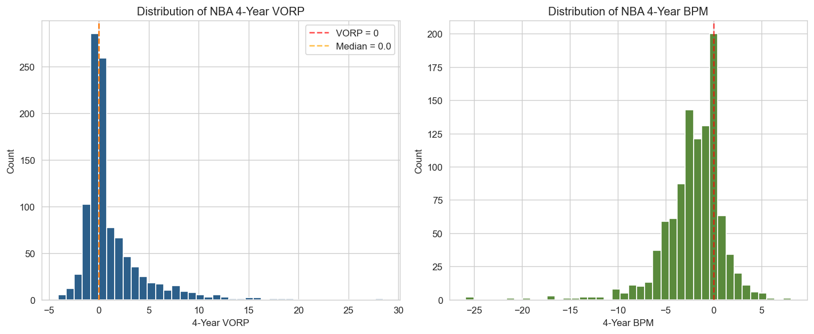
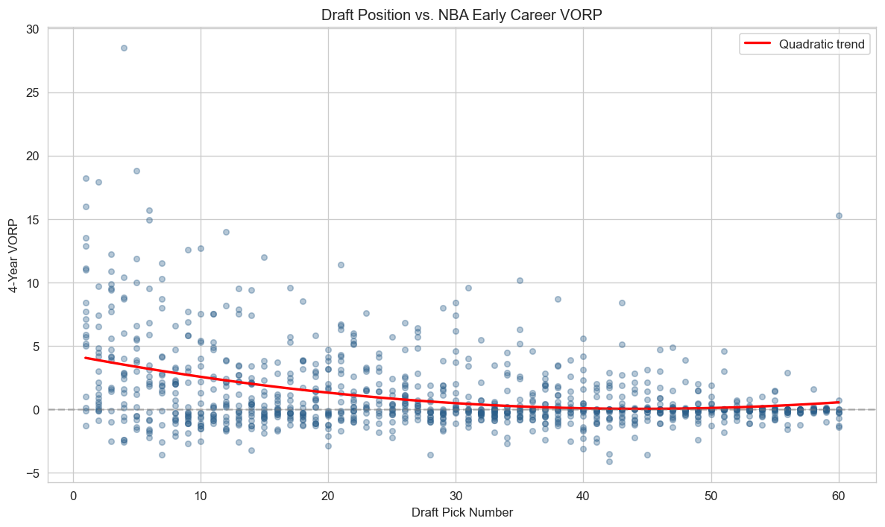
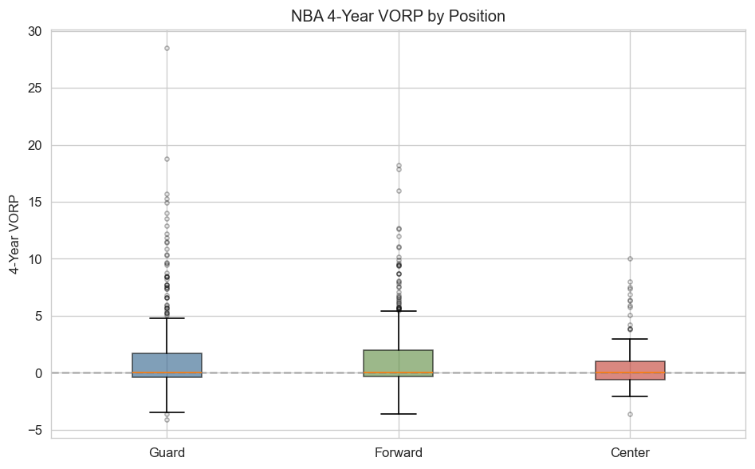
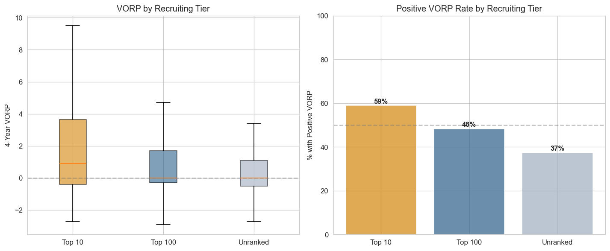
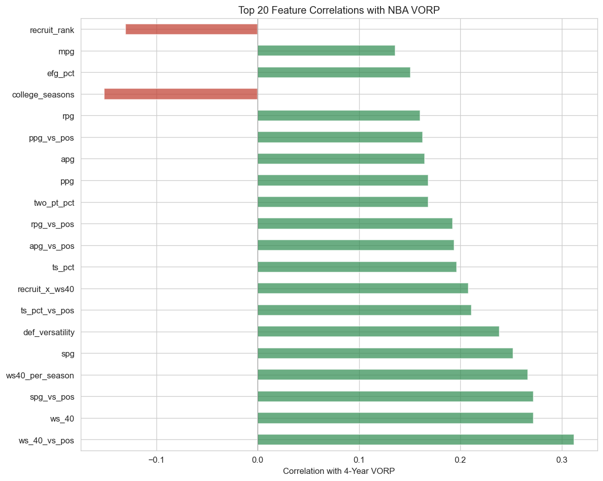
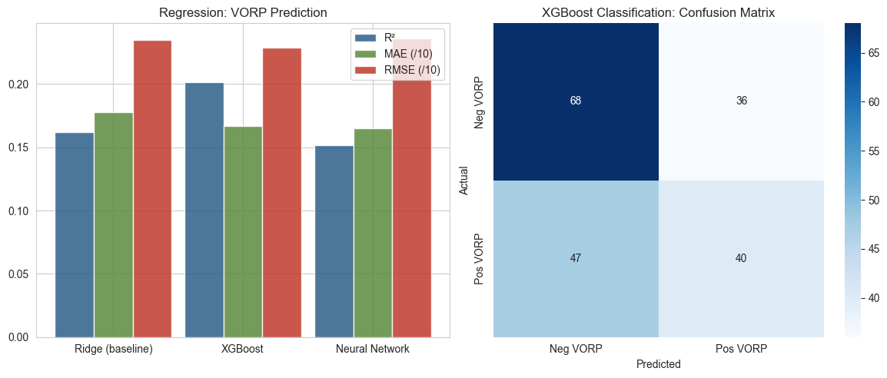
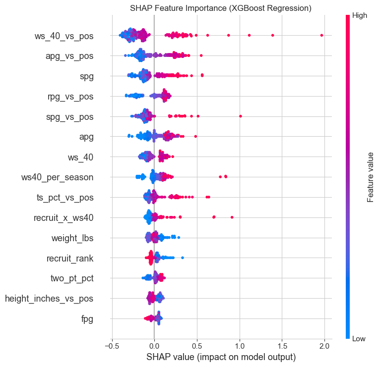
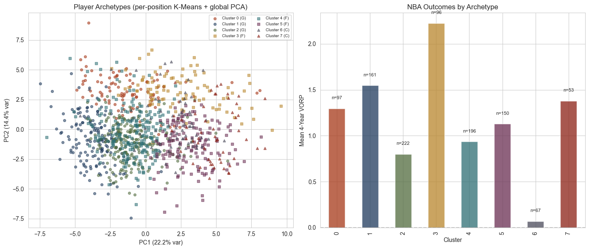

NBA teams spend millions on scouting that combines stats, video, and human judgment. This project sets out to solve a narrower question, how much of a player's early career production can be predicted using only collegiate box-score information?




As expected, pick number has the strongest correlation to 4-year VORP. However, we cannot use this information, as it leaks the target variable we are trying to predict. Position distributions have little impact on VORP, but recruiting tier does, drafting a former top-10 recruit results in an above replacement-level player almost twice as often as drafting an unranked player

β̂ = argmin ‖y − Xβ‖² + α‖β‖²
~4 KB JSONŷ = Σk=1..K fk(x), each fk a CART of depth ≤ D
reg:squarederrorTreeExplainer (exact)41 → 128 → 64 → 1 · ReLU activations · L² weight decay
argminC Σi ‖xi − μC(i)‖² · fit separately per position
| Model | R² | MAE | RMSE |
|---|---|---|---|
| Ridge (baseline) | 0.162 | 1.78 | 2.35 |
| XGBoost | 0.202 | 1.67 | 2.29 |
| Neural Network | 0.152 | 1.65 | 2.36 |
XGBoost explains about 20% of hold-out variance. On the positive-VORP classifier: 56.5% accuracy with AUC 0.591. That 20% is the value of purely statistical scouting; the remaining 80% is why teams still hire people to watch tape.

The SHAP ranking validates the single most impactful engineering decision: raw box-score stats are dominated by their position-normalised counterparts.


Mean VORP spans an order of magnitude (+0.17 → +2.17). Labels are derived from within-position z-scores gated by absolute basketball thresholds — a guard with 0.5 BPG can't be stamped "rim-protecting."
| Rank | Player | College | Pos | Proj. VORP | P(VORP+) |
|---|---|---|---|---|---|
| 1 | Cameron Boozer | Duke | F | +9.29 | 75% |
| 2 | Caleb Wilson | North Carolina | F | +5.56 | 78% |
| 3 | Kingston Flemings | Houston | G | +4.53 | 84% |
| 4 | Allen Graves | Santa Clara | F | +4.48 | 69% |
| 5 | Brayden Burries | Arizona | G | +4.23 | 83% |
fixeddata.csv — 1,042 × 28 (scraped Basketball-Reference
+ 247Sports) · 2026class.csv — 40 × 27 (incoming class).
src/preprocess.py — 13 engineered columns, position
z-scores, shrinkage 3P%, build score. Same function called on
historical and 2026 data for distributional parity.
src/train.py — temporal split, 3 regressors + 2 classifiers
with RandomizedSearchCV, SHAP TreeExplainer,
per-position K-means, global PCA. One command, ~2 min on a laptop.
models/*.pkl (7 files) · site/data/*.json
(5 files) · figures/*.png (12 plots).
bigboard.json regenerated separately via
generate_bigboard.py without retraining.
site/index.html — vanilla HTML/CSS/JS, no framework.
Ridge coefficients + scaler in model_meta.json drive
the in-browser live predictor; SHAP/comps are read from
prospects.json. Total deploy bundle: ~700 KB.
Thank you. Questions?